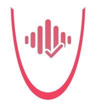

DialyzeAI · case studyEvery call at Alta, reviewed
How a Georgian electronics retailer went from spot-checking 1–3% of its customer calls to reviewing all of them, with every AI finding checked against the transcript.
The problem
Alta runs a busy customer call center. Quality review meant the QA team listening to recordings by hand, which covered 1–3% of calls. Everything else went unheard, so a wrong answer or a promise the store couldn't keep only came to light if a customer complained.
Share of calls that get a quality review
What I built
- Transcription that works in Georgian.Georgian is a low-resource language, so I tested several open and commercial speech models on Alta's own calls before choosing. Gemini on Vertex AI came out at about 2% word error rate in those tests.
- Scoring on the client's own criteria.Alta's QA team defines what a good call looks like, and every call is scored on those fields, with optional checks of whether the operator gave the customer correct information.
- A truth-check gate.Before a finding reaches a report, a separate step checks it against the transcript. A finding the transcript doesn't support doesn't get through. This is what makes the numbers usable by people who weren't on the call.
- Delivered inside the client's own cloud.It ships as a signed Windows app with built-in dashboards, running in Alta's own Google Cloud project. Build identity, fingerprints and prompt hashes mean neither the app nor its prompts can change silently.
Results
DialyzeAI went live at Alta in May 2026, and every call back to January was reviewed. Since then it has processed about 400,000 call minutes, roughly 6,700 hours a person would have had to listen to.
Over 7 months Alta sent 11 change requests. Each was answered within a business day and shipped within two.
We would especially highlight Satli's professionalism, fast support and proactive approach to product development. Throughout our cooperation they were always focused on our business needs and on getting the most out of the platform.
What's next
Checking answers against Alta's catalogue and internal guidelines, so the system can tell not just that an operator quoted a price, but whether the price was right.
Python, about 16,000 lines of application code and 12,000 lines of tests.